GIS for Economics Research
Masayuki Kudamatsu
14-15 June, 2016
Why GIS for economics?
Reason 1: GIS makes more research feasible
GIS makes research feasible (1/3)
by merging data by location
(Figure 2.3 of Dell 2009)
GIS makes research feasible (2/3)
by scanned old maps
e.g. Ethnic homelands in Africa by Murdock (1959)
Digitized by Nunn (2008)
Used by Nunn & Wantchekon (2011), Michalopoulos & Papaioannou (2013, 2014, 2015), Alsan (2015), Alesina et al. (2016), etc.
(Figure 5A of Alsan (2015))
GIS makes research feasible (3/3)
by satellite images
e.g. DMSP-OLS Nighttime Lights 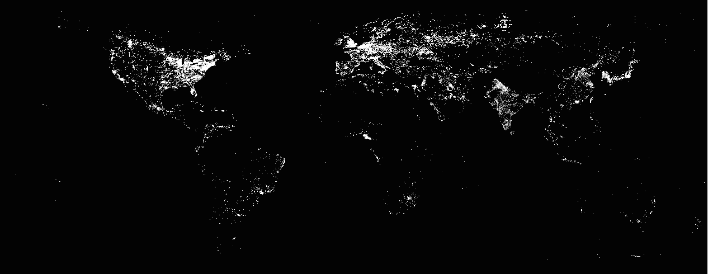
Used by Henderson et al (2012), Pinkovskiy & Sala-i-Martin (2016), Hodler & Raschky (2014), Michalopoulos & Papaioannou (2013, 2014), Alesina et al (2016), etc.
Why GIS for economics?
Reason 2: GIS makes identification more credible
GIS makes identification credible (1/4)
by controlling for more covariates
e.g. Peer effect estimation
(Figure 4 of Conley & Udry (2010))
GIS makes identification credible (2/4)
by constructing instruments
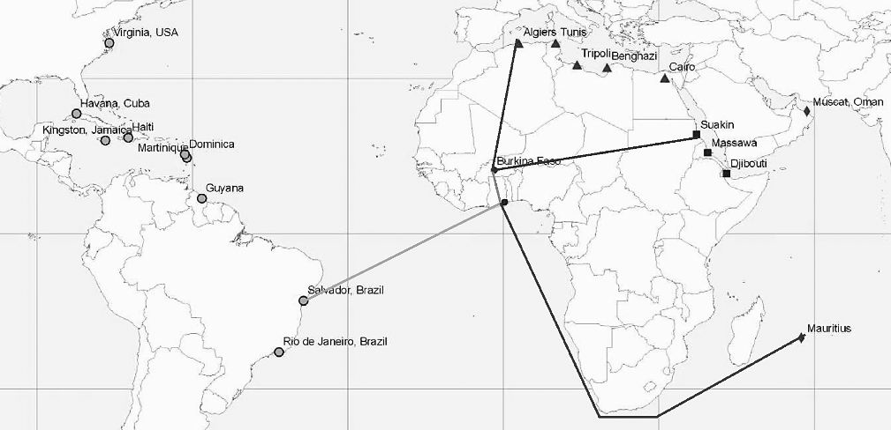e.g. Distance
(Figure 5 of Nunn 2008)
GIS makes identification credible (3/4)
by regression discontinuity

(Figure 2 of Dell (2010))
GIS makes identification credible (4/4)
by exogenous boundaries
Road map
1. GIS basics
2. Create spatial datasets on your own
3. Merge spatial datasets
4. Elevation
5. Distance
6. Spatial regression discontinuity
7. Surface area
8. Map Algebra
1. GIS Basics
Data type
Coordinate systems
GIS software
1.1 Data type
Spatial data comes in two different formats: Vector & Raster

How to edit data differs a lot between them
Vector data
Comes in three formats:
- Polygons
- Polylines
- Points
File format: Shapefile (.shp)
Polygon example #1
Countries
Source: GAUL
Polygon example #2
Sub-national districts
Source: GAUL
Polygon example #3
Language groups
Source: GREG
Polygon example #4
Lakes & Reservoirs
Source: Natural Earth
Polyline example #1
Roads
Source: gROADS
Polyline example #2
Rivers
Source: Natural Earth
Polyline example #3
Coastlines
Source: Natural Earth
Point example
Conflict locations (1997-2015)
Source: ACLED
Vector data (cont.)
Each unit: called a feature
Comes w/ attribute table
Raster data
Divides the earth surface into many "square" cells (or pixels)
Each cell contains one value
Raster example #1
Population density
Resolution: 2.5 arc-minutes
Source: Gridded Population of the World
Raster example #2
Elevation
Resolution: 30 arc-seconds
Source: STRM30
Raster example #3
Nighttime light
Resolution: 30 arc-seconds
Source: DMSP-OLS
1.2 Coordinate Systems
Earth is a sphere (approximately)
Various ways to two-dimensionally represent Earth
Each way corresponds to a coordinate system
- Also called "spatial reference" or "map projection"
Why important?
To merge different spatial datasets accurately
cf. Apple Map did this wrong when it was launched in 2012

Why important? (cont.)
To calculate distance and surface area properly
Geographic Coordinate Systems
Each location is coded by angle from earth center
e.g. Stockholm: 59.3293° N / 18.0686° E
Most popular: WGS 1984
Projected Coordinate Systems
Earth surface is projected by "light" from earth center on:
Cylinder

Projected Coordinate Systems
Earth surface is projected by "light" from earth center on:
Cone

Projected Coordinate Systems
Earth surface is projected by "light" from earth center on:
Plane

Projected Coordinate Systems (cont.)
Each location: coded in meters from a certain origin
Projected Coordinate Systems (cont.)
Examples (relevant for social scientists):
- UTM projections
- Equal Area projections
We will learn these projections later.
If you want to know more:
Map Projections: A Working Manual, by John P. Snyder (U.S. Geological Survey, 1987) (Downloadable for free)
1.3 GIS Software
ArcGIS
- Python-friendly
- Buggy; tricky to create map images; Windows only
QGIS
- Free; easy to create map images; compatible with any OS
- Python-unfriendly
- Tutorial: www.qgistutorials.com
$\Rightarrow$ ArcGIS recommended for the ease of use of Python (for replication), at least for now
1.3 GIS Software (cont.)
R
- A Python extension to work on spatial data
- Still under development (as of May 2016)
2. Create spatial data
on your own
Satellite images
Scanned old maps
Point locations
Grid cells
2.1 Satellite images
Images consist of pixels
Map each pixel's "color" into raster value
- By using statistical learning methods
A lot of time (and money to hire experts) needed, though.
2.1 Satellite image data (cont.)
Some satellite images: freely available
- See "15 Free Satellite Imagery Data Sources" by GIS Geography
Examples of constructing data from satellite images
- Measuering Yields from Space
- Deforestation
Application: Burgess et al. 2012
# of districts w/i province $\uparrow$ $\Rightarrow$ Deforestation $\uparrow$
Theory:
- Each district govt official engages in Cournot competition in selling (illegal) logging permits
- More districts $\Rightarrow$ More supply of illegal permits
Application: Burgess et al. 2012 (cont.)
Cannot rely on official stats of logging
$\Rightarrow$ Use satellite images
- Spatial resolution: 250m x 250m pixel
- Data: electromagnetic radiation strength in 36 bands of spectrum
- Develop algorithm to convert radiation patterns to forest coverage
Pixel-level data on deforestation

|
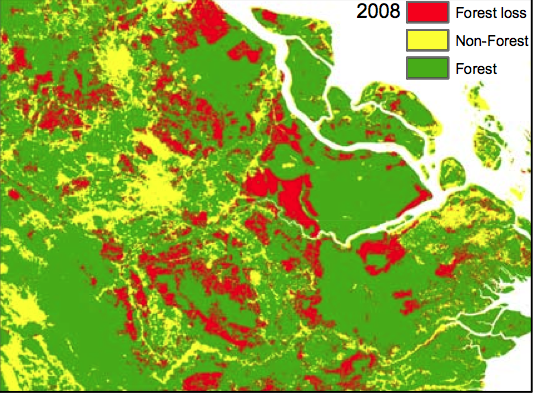 |
(Figure I of Burgess et al. 2012)
District-level data on deforestation
| 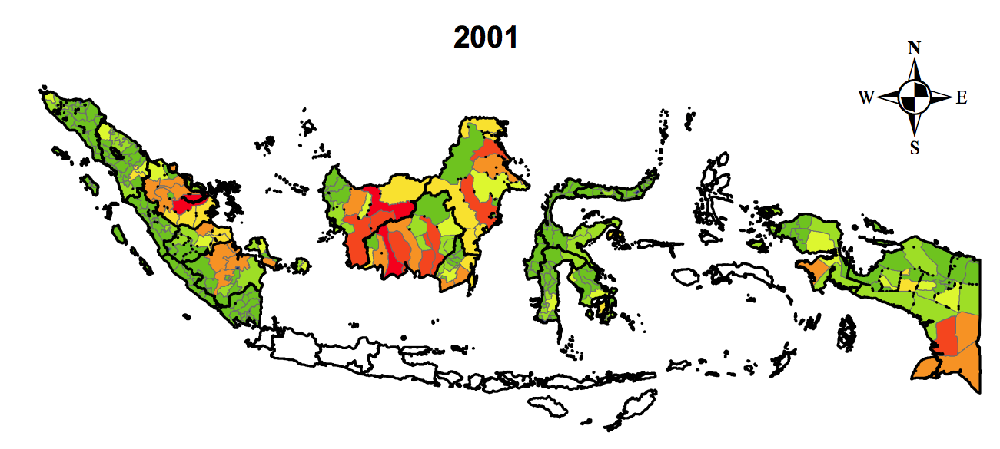 |

|
(Figure II of Burgess et al. 2012)
2.2 Scanned Old Maps
First, geo-reference the map
- See Yale Map Collection (2009) (pp. 8-10)
Then, create vector data by tracing lines w/ mouse
- See ArcGIS 10: Editing & Creating Your Own Shapefiles (Parts 3-6)
Also time-consuming but feasible with patience
Application: Burgess et al. 2015
Did Kenyan presidents build more roads for their co-ethnics?
Digitize Michelin maps for Kenya since 1961
Track road network expansion over time
Digitizing old maps

(source: Remi Jedwab's presentation slide)
2.3 Points
First, create a table in text format, where:
- Each row: location
- Column 1: longitude (x value)
- Column 2: latitude (y value)
- Other columns: attributes of each location
- Name
- Statistics
- Key (unique ID)
- Foreign keys (for merging with other data)
How to obtain longitude & latitude?
GPS receiver
- If you conduct your own survey
Online gazetteer
- If location names are available, search at:
- Geonames
- Geonames Tools toolbox automates search
- Global Gazetteer Version 2.3
- JRC Fuzzy Gazetteer
- If address is available, use Google Geocoder
-
Stata ado
geocode3automates search
2.3 Points (cont.)
To convert the text file table into point vector data in ArcGIS, use:
- Make XY Event Layer
- Copy Features
These are the examples of geo-processing tools
Python code for creating point features
import arcpy
input_table = "coordiates.txt"
output_shp = "points.shp"
varname_x = "longitude"
varname_y = "latitude"
coordinate_system = arcpy.SpatialReference(4326)
arcpy.MakeXYEventLayer_management(
input_table, varname_x, varname_y,
"Layer", coordinate_system)
arcpy.CopyFeatures_management("Layer", output_shp)
2.4 Grid cells

Any size of grid cell polygons can be created in ArcGIS
2.4 Grid cells (cont.)
Useful for:
- Merging weather data
- WorldClim (Dell, Jones, & Olken 2009)
- GCPC (Miguel et al. 2004)
- TOMS air pollution index (Jayachandran 2009)
- Exogenous boundaries
2.4 Grid cells (cont.)
To create grid cell polygons in ArcGIS, use:
- Create Fishnet
- Define Projection
These are also the examples of geo-processing tools
Python code for creating point features
import arcpy
output_shp = "gridcells25.shp"
cellsize = "2.5"
bottom_left = "-180 -65"
top_right = "180 85"
y_axis = "-180 -55"
coordinate_system = arcpy.SpatialReference(4326)
arcpy.CreateFishnet_management(
output_shp, bottom_left, y_axis,
cellsize, cellsize, "0", "0", top_right,
"NO_LABELS", "", "POLYGON")
arcpy.DefineProjection_management(
output_shp, coordinate_system)
Geo-processing tools
Master ArcGIS = Know which geo-processing tools to use
Takes vector/raster data as inputs
Most will create new vector/raster data
- Some tools just overwrite the input data
Can be executed in Python
- Should be, for replication
Plan for rest of this lecture
Introduce each geo-processing tool
Demonstrate how it's used by economists
3. Merge spatial datasets
- Spatial Join
- Intersect + Dissolve
- Zonal Statistics as Table
3.1 Spatial Join
Add new variables from a second vector data
Based on location
-
Not on key variables as in Stata's
merge
3.1 Spatial Join (cont.)
One useful application: merge with weather data
Weather data: available at grid cell level
- No information on country, province, district etc.
3.1 Spatial Join (cont.)
$\Rightarrow$ Spatial Join specifies which grid cells are relevant for each observation
Python code for Spatial Join
import arcpy
target = "cities.shp"
join = "weather_data_cells.shp"
output = "cities_with_weather_data.shp"
arcpy.SpatialJoin_analysis(
target, join, output)
Application 1: Feyrer & Sacerdote (2009)
European colonization $\Rightarrow$ Economic development?
Sample: islands (geo-referenced)
IVs for duration of colonization:
- Mean east-west wind speed
- SD of east-west wind speed
Application 1: Feyer & Sacerdote (2009) (cont.)
Wind data: CERSAT (1° x 1°)
Application 2: Alsan (2015)
Tsetse flies $\Rightarrow$ Africa's underdevelopment?
Weather in 1871 at 2° x 2° resolution
Temperature & humidity fed into a model to predict Tsetse fly survival
Application 2: Alsan (2015) (cont.)
Matched with Ethnographic Atlas
3.2 Intersect + Dissolve
Intersect: Creates intersection features

3.2 Intersect + Dissolve (cont.)
Dissolve: Combines features by key variables

Can also create summary statistics
-
Stata's
collapse
3.2 Intersect + Dissolve (cont.)
Can calculate # of polygons/polylines w/i zone polygon
import arcpy
inFeatures = ["counties.shp", "streams.shp"]
intersectOutput = "streams_by_country.shp"
dissolve_field = "county_id"
outFeatures = "counties_number_of_streams.shp"
arcpy.Intersect_analysis(
inFeatures, intersectOutput)
arcpy.Dissolve_management(
intersectOutput, outFeatures,
dissolve_field, "COUNT")
Application 1: Hoxby (2000)
Competition $\Rightarrow$ School quality $\uparrow$?
IV: # of streams w/i city
- More streams $\Rightarrow$ More school districts
Application 2: Bai and Jia (2016)
In early 20c, Imperial China abolished 1300-year-old civil service exams
Prefectures w/ higher quota $\Rightarrow$ more uprisings during the 1911 Revolution
IV: # of streams w/i prefecture
- Quota depends on # of counties w/i prefecture
3.3 Zonal Statistics as Table
Calculates sum stat of raster values w/i zone
Zone: defined by polygon or polyline
-
Stata's
collapseby zone, executed on raster data
3.3 Zonal Statistics as Table (cont.)
- Mean / Standard deviation
- Min / Max / Range
- Sum
- Count
For integer raster:
- Median
- Variety (# of unique values)
- Majority (most frequent value)
- Minority (least frequent value)
3.3 Zonal Statistics as Table (cont.)
If unit of analysis is point, use either:
- Extract Multi Values To Points
- Buffer + Zonal Statistics as Table
Python code for zonal statistics
import arcpy
arcpy.CheckOutExtension("spatial")
# Inputs
elevation = "srtm30.dem"
districts = "district.shp"
# Intermediate
zonalstat = "zonalstat.dbf"
# Outputs
mean_elevation = "mean_elevation.xls"
arcpy.gp.ZonalStatisticsAsTable_sa(
districts, "dist_id", elevation,
zonalstat, "DATA", "MEAN")
arcpy.TableToExcel_conversion(
zonalstat, mean_slope)
Application 1: Burgess et al. 2012
| Pixel-level | District-level | |
|
|
$\Rightarrow$ |
Application 2: Nighttime light studies
Obtain the mean cell value by:
- Country (Henderson et al. 2012)
- Provinces (Hodler & Raschky 2014)
- Electoral districts (Baskaran et al. 2015)
- Ethnic homelands (Michalopoulos & Papaioannou 2013 / 2014, Alesina et al. 2016)
Application 3: Dell et al. 2012
Temperature $\uparrow$ $\Rightarrow$ Economic growth $\downarrow$?
Use population-weighted average temperature
(Figure 2.3 of Dell 2009)
Application 4: Michalopoulos (2012)
Geographic diversity $\Rightarrow$ Ethnic diversity?
Empirical challenge:
- Endogeneity of geographic diversity by country formation
$\Rightarrow$ 2.5°x2.5° grid cells as units of analysis
Application 4: Michalopoulos (2012) (cont.)
How to measure ethnic & geographic diversity, then?
ArcGIS helps:
- Intersect + Dissolve $\Rightarrow$ # of languages spoken
- Zonal Statistics $\Rightarrow$ S.D. of elevation / land quality
Application 4: Michalopoulos (2012) (cont.)
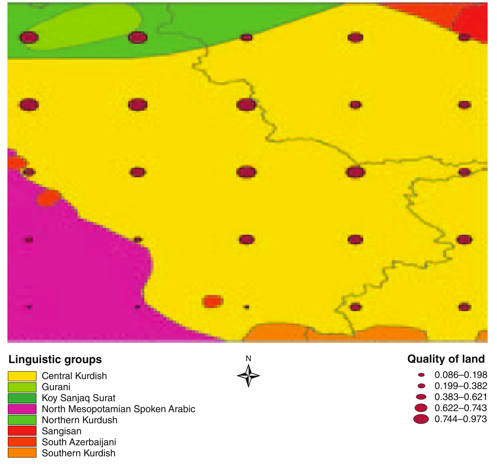4. Elevation
- Slope
- Slope + Reclassify
- Irregular Terrain Model
4.1 Slope
Returns either $\theta$ or $\tan\theta$ in diagram below

4.1 Slope (cont.)

$\tan\theta$ for cell $e$ is obtained by
\begin{align*} \Rightarrow \ \tan \theta = \sqrt{(dz/dx)^2+(dz/dy)^2} \end{align*}
where
\begin{align*} \frac{dz}{dx} = & \ \Big[\frac{c + 2f + i}{4} - \frac{a+2d+g}{4}\Big] / 2 \\ \frac{dz}{dy} = & \ \Big[\frac{a+2b+c}{4} - \frac{g + 2h + i}{4}\Big] / 2 \end{align*}
Application 1: Dinkelman (2011)
Electrification in South Africa (1996-2001)
$\Rightarrow$ Female labor supply $\uparrow$
IV: mean land slope
- Flat terrain: cheap to lay power lines
Application 1: Dinkelman (2011) (cont.)
| Slope (lighter = flatter) | Electrification (red) |
Application 2: Qian (2008)
Tea production $\uparrow$ in China due to liberalization in 1979
$\Rightarrow$ Male-to-female ratio $\downarrow$
IV: mean land slope
- Tea grows in hilly terrain
Application 2: Qian (2008) (cont.)
| 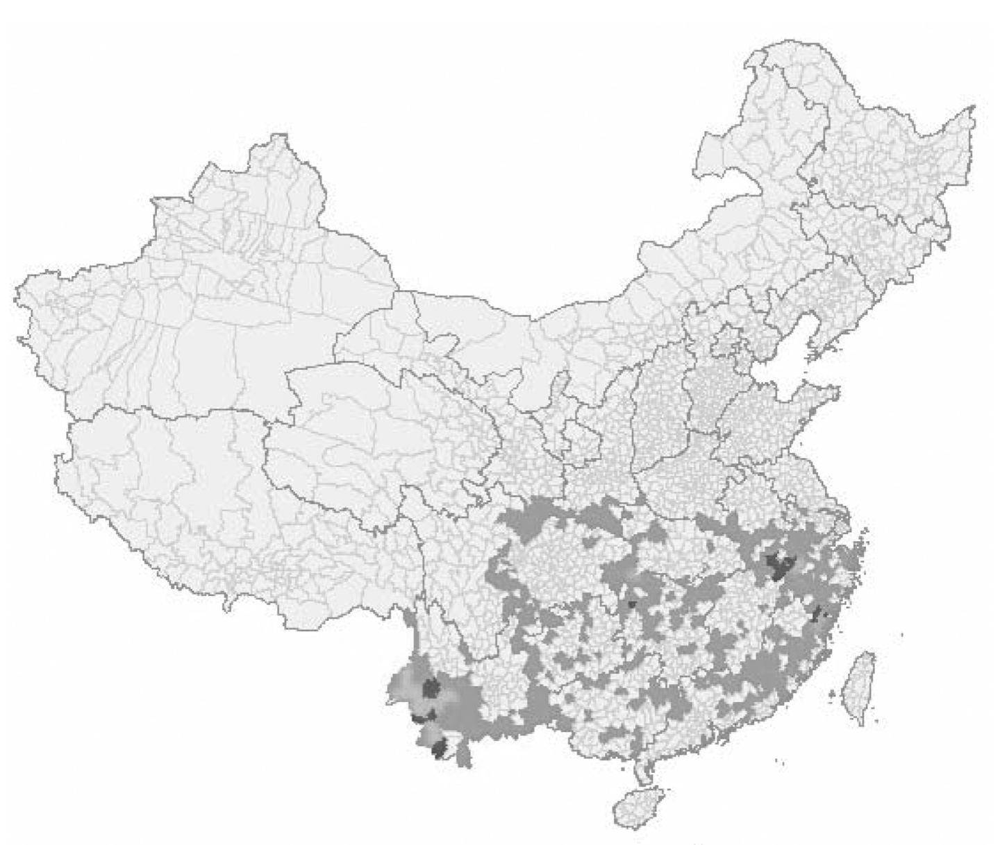 | |
| Slope (darker = steeper) | Tea (darker = more) |
Python code for average slope
import arcpy
arcpy.CheckOutExtension("spatial")
# Inputs
elevation = "srtm30.dem"
districts = "district.shp"
# Intermediates
slope = "slope.tif"
zonalstat = "zonalstat.dbf"
arcpy.gp.Slope_sa(
elevation, slope, "PERCENT_RISE", "0,000009")
arcpy.gp.ZonalStatisticsAsTable_sa(
districts, "dist_id", slope,
zonalstat, "DATA", "MEAN")
4.2 Slope + Reclassify
Reclassify: Creates categorical raster data
Example: a dummy variable for slope 3-6%

Python code for slope category
import arcpy
arcpy.CheckOutExtension("spatial")
# Inputs
elevation = "srtm30.dem"
# Outputs
slope = "slope.tif"
slope_3_6 = "slope3to6.tif"
arcpy.gp.Slope_sa(
elevation, slope, "PERCENT_RISE", "0,000009")
arcpy.gp.Reclassify_sa(
slope, "Value",
"0 3 0;3 6 1;6 193,22999999999999 0",
slope_3_6, "DATA")
Application 1: Duflo & Pande (2007)
Irrigation dams $\Rightarrow$ Poverty $\downarrow$?
IV: Fraction of river areas in three slope ranges
$\Leftarrow$ Easy to build if river slope is:
- Moderate (1.5-3%) for irrigation dams
- Very steep (6%+) for hydroelectricity dams
Application 1: Duflo & Pande (2007) (cont.)
| River slope (darker = steeper) | Dams (darker = more) |
Application 1: Duflo & Pande (2007) (cont.)
Intersect + Dissolve $\Rightarrow$ River by districts
Slope + Reclassify $\Rightarrow$ Indicator for each slope range
Zonal Statistics as Table $\Rightarrow$ Fraction of river areas in each slope range by district
Application 2: Saiz (2010)
Measures % of areas with slope > 15% as unsuitability for urban development
Finds housing supply inelastic in such areas
Slope of over 15%: now often used as geographic constraints to housing supply / urban development
4.3 Irregular Terrain Model
Used by radio/tv enginneers to predict signal reception

(Figure 2 of Olken (2009))
Application 1: Olken (2009)
# of TV channels $\uparrow$ in Indonesia $\Rightarrow$ Social capital $\downarrow$
IV: TV signal strength
Application 2: Yanagizawa-Drott (2014)
Anti-Hutu radio $\Rightarrow$ Rwandan genocide incidents $\uparrow$
IV: radio signal strength
5. Distance
Coordinate systems for distance
Buffer + Spatial Join
Feature To Point + Near
Feature To Point + Generate Near Table
5.1 Coordinate systems for distance
UTM projections for polyline length
Geographic coordinate systems can also be used for distance from points
What is UTM?
Stands for Universal Transverse Mercator
Project earth surface onto the cylinder that is tangent on standard meridian
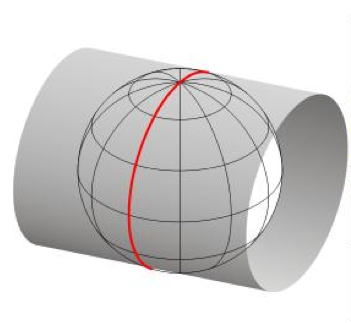Father away from standard meridian, more distortion
What is UTM? (cont.)
To minimize distortion:
1. Divide Earth into 60 zones (6° wide in longitude)

What is UTM? (cont.)
2. For each zone, set standard meridian in the middle
3. Scale down distance along standard meridian by 0.9996
- This number is called scale factor
- 0.9996 minimizes overall distortion w/i the 6°-wide zone
Calculate length of polylines
Project, to UTM
Add Field + Calculate Field
float(!shape.length!)
Calculate 3D length of polylines
Project polylines, to UTM
Project Raster to UTM for elevation raster
Add Surface Information
Applications
Dell (2010): length of roads by district as intermediate outcome
Duflo & Pande (2007): length of rivers by district as control
Distance between points
1. Obtain geographic coordinates
2. Use the Great Circle Distance formula
\begin{align*} d_{ij} =& \ 111.12 \times \cos^{-1}\big[\sin(La_i)\sin(La_j) \\ & + \cos(La_i)\cos(La_j)\cos(Lo_i-Lo_j)\big] \end{align*}
- $d_{ij}$: distance in km from $i$ to $j$
- Proof: see Wolfram MathWorld
-
Can be implemented by Stata ado
globdist
Distance between points (cont.)
Distance from polygons: obtain their centroids
-
Stata ado
shp2dta(cf. Lec 2) - Feature To Point + Add XY Coordinates in ArcGIS (cf. Lec 2 Ex 1 Steps 3-4)
Distance to polyline: obtain nearest point on it
- Near in ArcGIS
5.2 Buffer
Creates neighborhood polygons
Size of neighborhood can be specified
For points: a circle of $x$-meter/feet radius

5.2 Buffer (cont.)
| For polylines: |

|
| For polygons: |

|
Buffer (cont.)
Then use buffer polygons as target features in Spatial Join
$\Rightarrow$ Identify other features in the neighborhood
import arcpy
# Identify other villages within 20-mile radius
in_features = "C:/input/villages.shp"
buffer = "C:/temp/village_buffer.shp"
out_feature_class = "C:/output/village_neighbors.shp"
radius = "20 miles"
arcpy.Buffer_analysis(in_features, buffer, radius)
arcpy.SpatialJoin_analysis(buffer, in_features, out_feature_class, "JOIN_ONE_TO_MANY")
Application 1: Miguel & Kremer (2004)
Deworming school children $\Rightarrow$ Infection in neighborhood $\downarrow$?
Application 2: Conley & Udry (2010)
Farmer's use of new technology $\Rightarrow$ Learning by friends?
Control for average use in neighborhood (1km radius)
Application 3: Muehlenbachs et al. (2015)
Shale gas $\Rightarrow$ House price $\downarrow$?
Treatment: # of drilled wells in 2km radius of each house
Sample restriction: 1km buffer along water service area boundary
(Figure 6 of Muelenbachs et al. 2015)
5.3 Feature To Point + Near
Feature To Point : Creates centroids of input features
5.3 Feature To Point + Near (cont.)
Near: Finds nearest feature to each input feature
Also calculates distance to it
If nearest features are polyline / polygon
$\Rightarrow$ Can obtain coordinate of nearest point
Application 1: Nunn (2008)
Slave trade $\Rightarrow$ Africa's underdevelopment?
IV for slave trade: Distance to nearest slave trade centers

Application 1: Nunn (2008) (cont.)
Feature To Point $\Rightarrow$ Country centroids
Near w/ coastline $\Rightarrow$ Nearest point on coast
Make XY Event Layer + Copy Feature $\Rightarrow$ Nearest coastal point feature class
Near w/ slave trade centers $\Rightarrow$ Distance to nearest trade center
Application 1: Nunn (2008) (cont.)
Feature To Point $\Rightarrow$ Country centroids
Near w/ coastline $\Rightarrow$ Nearest point on coast
Make XY Event Layer + Copy Feature $\Rightarrow$ Nearest coastal point feature class
Near w/ slave trade centers $\Rightarrow$ Distance to nearest trade center
Exclusion restrictions
Location of slave trade centers:
- Determined by climate suitability of plantation crops / locatino of mines (p. 160)
- Not affected by the distance to Africa
Distance to slave markets $\neq$ Distance to other economic opportunities
- Reduced-form correlation is absent outside Africa (p. 163)
LATE
Maybe a smaller impact if countries voluntarily engaged in slave trades
But LATE may be of more interest in this context
Application 2: Rogall (2014)
Presence of armed groups $\Rightarrow$ civilian participation in Rwandan genocide $\uparrow$
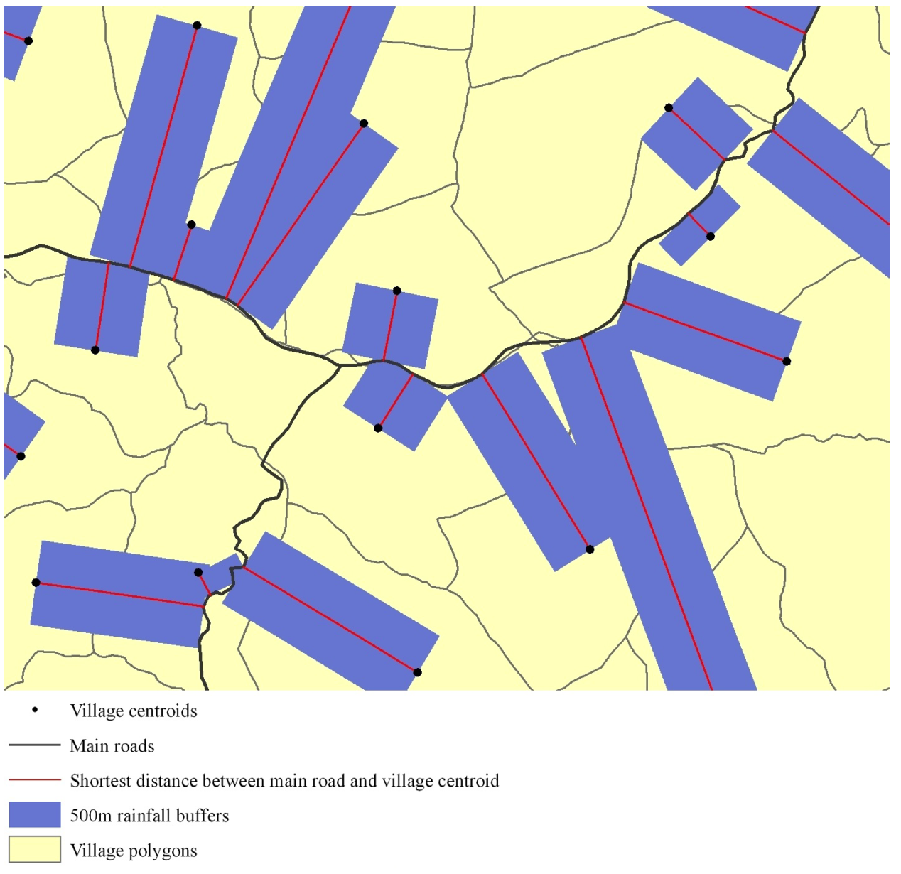Instrument:
Distance to main road
x
rainfall along the dirt track to main road during genocide
- XY To Line + Buffer + Spatial Join
5.4 Feature To Point + Generate Near Table
Generate Near Table: Same as Near tool
Except more than one nearest feature allowed
$\Rightarrow$ Useful to calculate distance to many points
Application 1: Campante & Do (2014)
Population concentration around US state capital city
- Measured by the distance-weighted sum of county population
- Distance: btw capital and county centroids
$\Rightarrow$ US state govt quality $\uparrow$
- Newspaper coverage of state politics $\uparrow$
- Money politics $\downarrow$
- Public good provision $\uparrow$
Application 2: Currie & Neidell (2005)
Air pollution $\Rightarrow$ Infant mortality in California?
Data:
- Infant mortality: individual-level with zip-code of mothers' residency
- Air pollution: monitor-level (geo-referenced)
How to construct pollution measure at zip-code level?
Monitor locations & zip-code polygons

(taken from Neidell 2004)
Application 2: Currie & Neidell (2005) (cont.)
Feature To Point $\Rightarrow$ Zip-code zone centroids
Near with monitors $\Rightarrow$ Distance to each monitor
Average pollution by weighting each monitor with inverse distance (within 20 miles)
6. Spatial Regressioin Discontinuity
Approach 1: Scalar RD
\begin{align*} y_{i} = \beta T_{i} + \gamma Dist_i + \delta T_{i} Dist_i + \mu_s + \varepsilon_{i} \end{align*}
Project coordinates into distance to boundary ($Dist_i$)
- $Dist_i < 0$ for control areas
Approach 1: Scalar RD (cont.)
\begin{align*} y_{i} = \beta T_{i} + \gamma Dist_i + \delta T_{i} Dist_i + \mu_s + \varepsilon_{i} \end{align*}
Then use standard RD design w/ boundary segment FE ($\mu_s$)
- $i$'s nearest point on boundary $\in$ Segment $s$
Approach 1: Scalar RD (cont.)
w/o boundary segment FE, you compare point $i$ to $k$ in diagram below
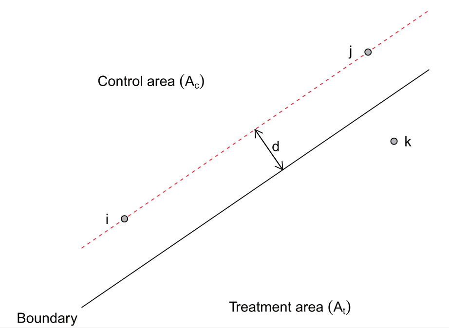(Figure 3 of Keele & Titiunik 2014)
Approach 2: Boundary RD
\begin{align*} y_{i} = \beta T_{i} + \boldsymbol{x}'_i\boldsymbol{\gamma} + T_{i}\boldsymbol{x}'_i\boldsymbol{\delta} + \mu_n + \varepsilon_{i} \end{align*}
Use coordinates ($\boldsymbol{x}_i$) for RD polynomials
- Not zero at boundary
Approach 2: Boundary RD (cont.)
\begin{align*} y_{i} = \beta T_{i} + \boldsymbol{x}'_i\boldsymbol{\gamma} + T_{i}\boldsymbol{x}'_i\boldsymbol{\delta} + \mu_n + \varepsilon_{i} \end{align*}
Pick (equally-spaced) points on boundary (denoted by $n$)
Assign each observation to its nearest boundary point, to define $\mu_n$
Approach 2: Boundary RD (cont.)
\begin{align*} y_{i} = \beta T_{i} + \boldsymbol{x}'_i\boldsymbol{\gamma} + T_{i}\boldsymbol{x}'_i\boldsymbol{\delta} + \mu_n + \varepsilon_{i} \end{align*}
Treatment effect at boundary point $n$: given by
\begin{align*} \beta + \boldsymbol{x}'_n\boldsymbol{\delta} \end{align*}
See Chapter 2 of Zajonc (2012) (commonly cited as Imbens and Zajonc 2011) for more detail
Spatial RD Design Data Generation
1. Attach treatment indicator to zone polygons
2. Treatment boundary polylines
3. Boundary segment indicator & Distance to boundary
4. Visualize spatial RD plots
1. Attach treatment indicator to zone polygons
Create a text file table of treatment indicator
Table To Table, to convert it into dBASE format
Join Field, to attach treatment indicator to polygons
2. Treatment boundary polylines
Select, to create two feature classses
- One for treated zones
- The other for control zones
Intersect with output type LINE
3. Boundary segment indicator & Distance to boundary
First, split boundary polyline into segments of equal length
- Unsplit Line
- Add Field + Calculate Field $\Rightarrow$ split point coordinate
- Make XY Event Layer + Copy Features $\Rightarrow$ Split point features
- Split Line At Point
!shape!.positionAlongLine(0.5,True).firstPoint.X
3. Boundary segment indicator & Distance to boundary (cont.)
Then, use Near
- Distance to boundary
- Nearest segment feature ID (NEAR_FID)
Application 1: Dell (2010)
Does forced labor system during Spanish colonial rule affect todya's living standards in Peru? If so, why?
Application 2: Michalopoulos & Papaioannou (2014)
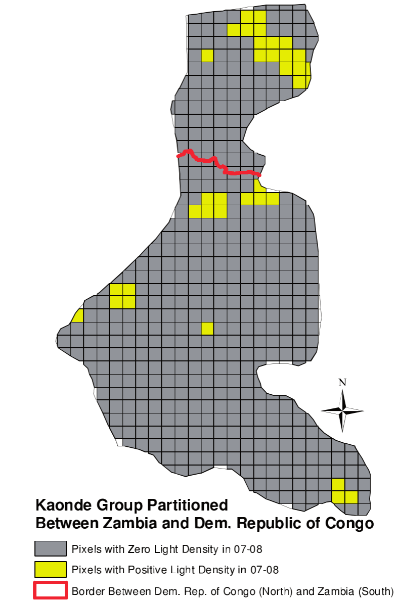Ntnl govt quality $\Rightarrow$ development?
Look at ethnic homelands split by national boarders in Africa
- Segment FE = Ethnicity FE
Find no difference in nighttime light across border on average
Large heterogeneity across ethnic groups, though
Berger et al. (2016)
Does higher TV license fees increase evasion in Austria?
Exploit differences in fees across states
Focus on state borders where covariates are balanced
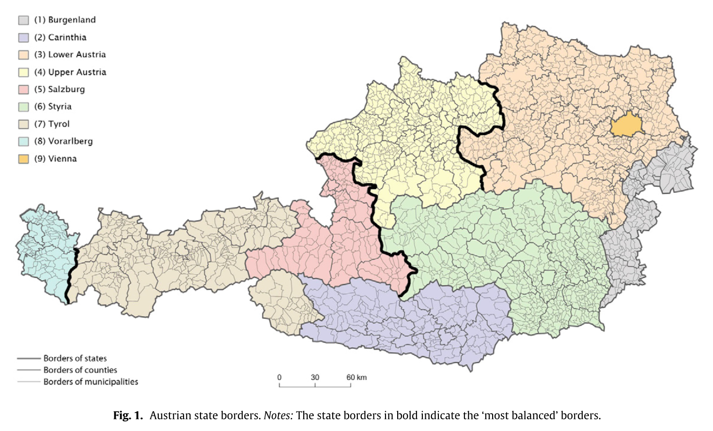Gonzalez (2015)
Cellphone coverage $\Rightarrow$ Electoral fraud $\downarrow$ in Afghanistan
1000+ polling stations w/i 5km from coverage boundary
$\Rightarrow$ Boundary RD approach: feasible

7. Surface Area
Geographic Coordinate Systems
Not suitable for calculating surface area
- 1° in lat: 110.6km at equator / 111.7km at poles
- 1° in lon: 111.3km at equator / 55.8km at 60° N/S
Project, to an Equal Area projection
Add Field + Calculate Field
float(!SHAPE.AREA!)
Equal Area projections
All give the (approximately) correct surface area
Difference is in how the projected map looks
Equal area projection #1
Lambert Cylindrical Equal Area
Shrink latitude to compensate shorter unit of longitude towards Poles

Equal area projection #2
Alberts Conic Equal Area
Standard map projection for USA
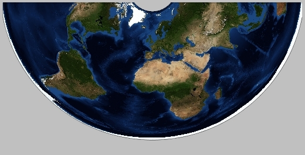
Equal area projection #3
Sinusoidal Projection
Shrink longitude by $\cos(latitude)$
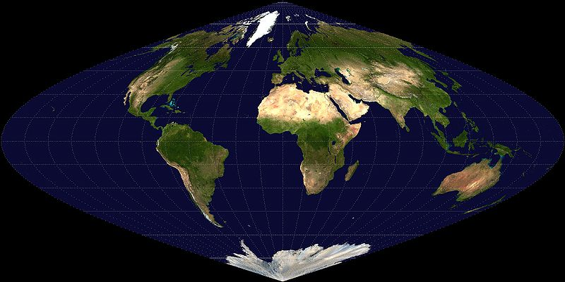

Application: Nunn (2008)
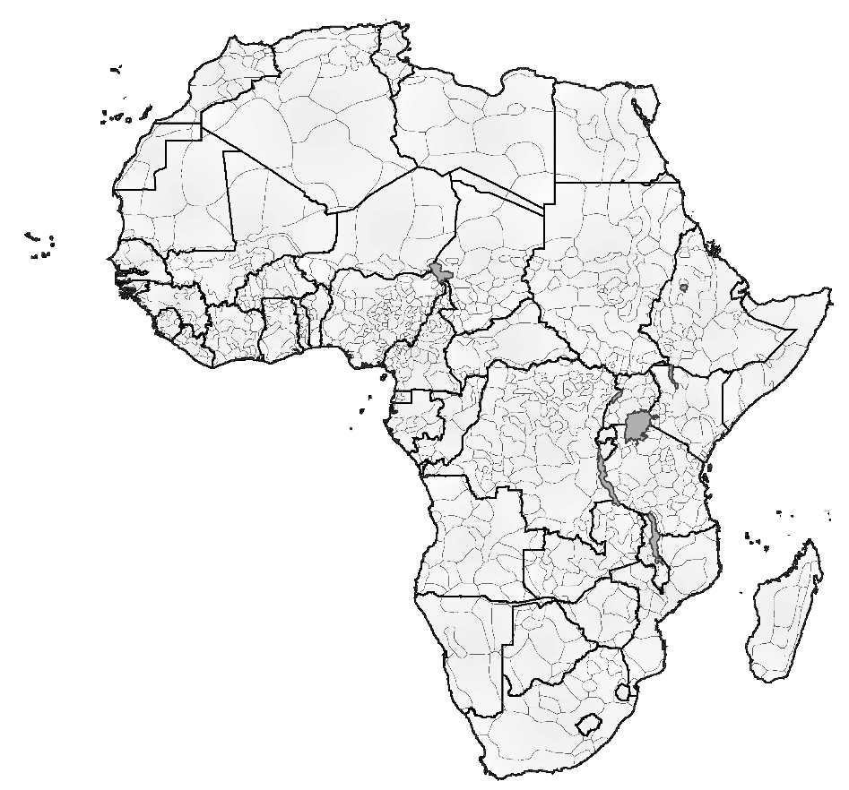Assign # of slaves from each ethnic group into different countries by surface area
Figure II of Nunn (2008)
8. Map Algebra
Cell-by-cell calculation across multiple raster datasets
1. Arithmetic operations
-
with numbers (e.g.,
raster*2) -
across several raster datasets (e.g.,
ras1 + ras2)
2. Functions
- Math toolset (square root, logarithm, sine/cosine, etc.)
- Cell Statistics
- Focal Statistics
Application: Mayshar et al. (2015)
What caused the formation of the state?
Focus on crop type (cereals vs roots/tubers)
Theory
Roots and Tubers
Cassava, yam, taro, bananas...
Perishable upon harvest
Harvesting is non-seasonal
$\Rightarrow$ No incentive to steal / confiscate
Theory (cont.)
Cereals
Wheat, rice, maize...
Storable
Harvest within a short period of time
$\Rightarrow$ Incentive to steal / confiscate
Theory (cont.)
State formation
Building a state incurs a fixed cost
Bandits have no incentive to build a state with roots & tubers
Historical examples
- Ancinet Egypt: wheat with state
- New Guinea: yam/taro without state
cf. Coltan vs gold in DR Congo (Sanchez de la Sierra (2014))
Data on cereal / tuber productivity
GAEZ
Resolution: 5 x 5 arc-minutes (about 10 X 10 km)
Data: potential yields based on climate & soil
$\Rightarrow$ Exogeneous to human activities
$\Rightarrow$ Widely used by economists
Map Algebra in action
1. Convert yields into calorie for 15 crops
# Setting up
import arcpy
arcpy.CheckOutExtension("spatial")
# Input raster
maize_yield = arcpy.sa.Raster("maize.tif")
# Map algebra
maize_calorie = maize_yield * 36.5
# Save output
maize_calorie.save("calorie_cereal_maize.tif")
Map Algebra in action (cont.)
2. Obtain maximum for each crop type
# Maximum calorie by cereal crops
input_cereals = arcpy.ListRasters("calorie_cereal_*", "TIF")
max_cereal = CellStatistics(input_cereals, "MAXIMUM", "DATA")
# Maximum calorie by tuber/root crops
input_tubers = arcpy.ListRasters("calorie_tuber_*", "TIF")
max_tuber = CellStatistics(input_tubers, "MAXIMUM", "DATA")
Map Algebra in action (cont.)
3. Take difference
# Cereal's caloric advantage over tubers
caloric_diff = max_cereal - max_tuber
# Save the output
caloric_diff.save("caloric_diff.tif")
Focal Statistics
Focal Statistics
Calculates summary statistics in neighbouring raster cells
e.g. Sum of immediate neighbors 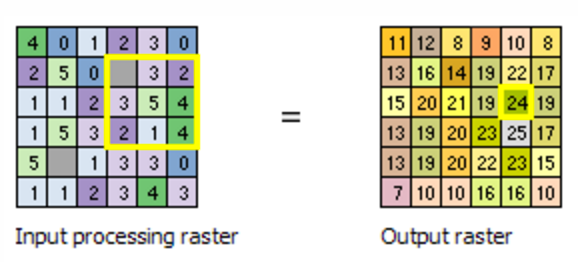
Focal Statistics (cont.)
You can define the neighborhood very flexibly (more detail)
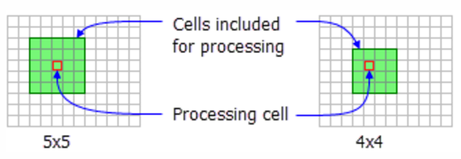Rectangle
Focal Statistics (cont.)
You can define the neighborhood very flexibly (more detail)
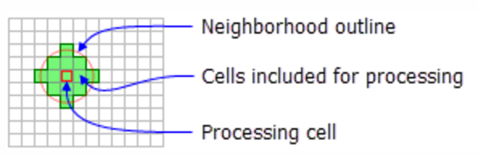Circle
Focal Statistics (cont.)
You can define the neighborhood very flexibly (more detail)
Annulus (ring)
Focal Statistics (cont.)
You can define the neighborhood very flexibly (more detail)
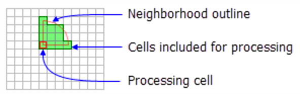Wedge
Focal Statistics (cont.)
You can define the neighborhood very flexibly (more detail)

Irregular
Focal Statistics (cont.)
You can define the neighborhood very flexibly (more detail)
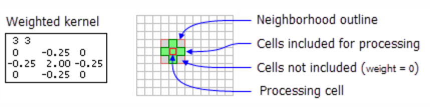Weight
Application: Nunn & Puga (2011)
Estimate terrain ruggedness's impact on income per capita
Negative outside Africa
- Transportation cost
Positive in Africa
- Negative once slave export is controlled for
Terrain Ruggedness Index
Originally proposed by Riley et al. (1999)
Defined as: \begin{align*} TRI_{xy} =& \sqrt{\sum_{i=x-1}^{x+1} \sum_{j=y-1}^{y+1} (e_{ij}-e_{xy})^2} \end{align*}
| $e_{xy}$ | Elevation at longitude $x$ latitude $y$ |
Can be obtained by Focal Statistics + Map Algebra
Raster cell (30x30 arc-sec) level data is downloadable from Diego Puga's website
Terrain Ruggedness Index (cont.)
Expand the expression inside the square root:
\begin{align*} TRI_{xy} =& \sqrt{\sum_i \sum_j (e_{ij})^2 - 2e_{xy}\sum_i\sum_j e_{ij} + 9 (e_{xy})^2} \end{align*}
Map Algebra calculates $(e_{ij})^2$:
elev = Raster("srtm30.tif")
elev_sq = elev**2
Terrain Ruggedness Index (cont.)
Expand the expression inside the square root:
\begin{align*} TRI_{xy} =& \sqrt{\sum_i \sum_j (e_{ij})^2 - 2e_{xy}\sum_i\sum_j e_{ij} + 9 (e_{xy})^2} \end{align*}
Focal Statistics calculates $\sum_i \sum_j (e_{ij})^2$ and $\sum_i\sum_j e_{ij}$:
sum_elev_sq = FocalStatistics(elev_sq, "", "SUM", "")
sum_elev = FocalStatistics(elev, "", "SUM", "")
Terrain Ruggedness Index (cont.)
Expand the expression inside the square root:
\begin{align*} TRI_{xy} =& \sqrt{\sum_i \sum_j (e_{ij})^2 - 2e_{xy}\sum_i\sum_j e_{ij} + 9 (e_{xy})^2} \end{align*}
Map Algebra sums them up and takes square root:
TRI_square = sum_elev_sq - 2*elev*sum_elev + 9*elev_sq
TRI = SquareRoot(TRI_square)
TRI.save("ruggedness.tif")
5. Other geo-processing tools used by economists
Polygon Neighbors
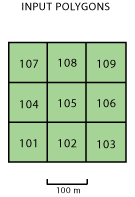
Application of Polygon Neighbors
Acemoglu et al. (2015)
State capacity in one municipality
$\Rightarrow$ State capacity & prosperity in neighboring municipalities
- Polygon Neighbors: identify neighboring municipalities among 1017 in total in Colombia
Create Thiessen Polygons tool
Divide surface by nearest point (aka Voronoi partition)
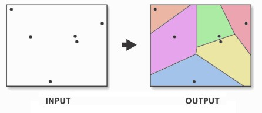
Alesina et al. (2016) use it as a robustness check to Murdock's ethnic homeland boundaries
Alsan (2015) (cf. Lec 2) uses it as an alternative to the 20-miles radius of Ethnographic Atlas society location
Konig et al. (2015)

Estimate the externality of military efforts on allied partners' effort in DR Congo civil wars
Use rainfall shock as instruments
But how do we measure the location of each military actor?
Konig et al. (2015) (cont.)
Minimum Bounding Geometry tool with Convex Hull option

Directional Distribution (Standard Deviation Ellipse) tool

Hariri (2015)
How city shapes affect population, wages, and housing rents
- Compact shapes reduce transportation cost etc.
How can we measure city shapes?
Hariri (2015) (cont.)
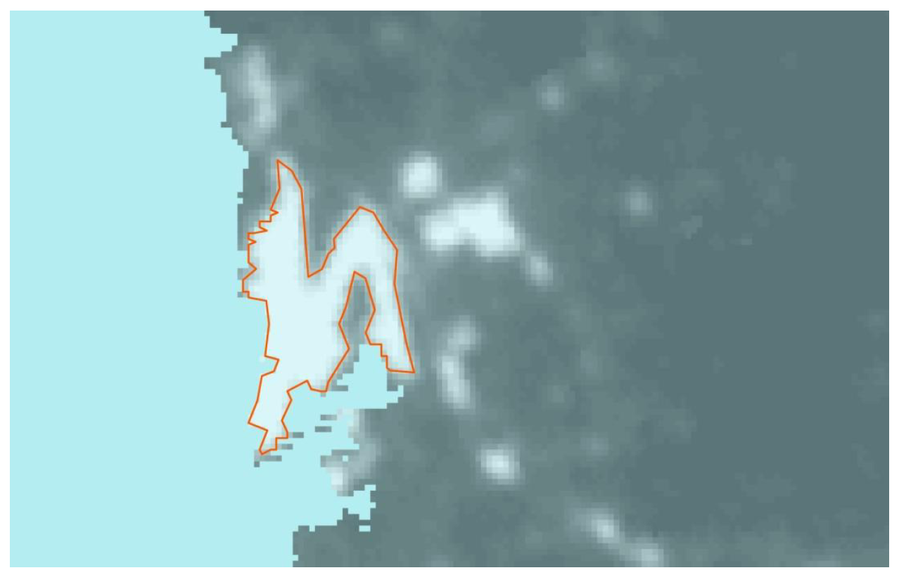Use nighttime light image
Luminosity over 40 is defined as urban area
$\Rightarrow$ Reclassify tool (cf. Lec 6)
Hariri (2015) (cont.)
Then use the Region Group tool, to assign unique ID to each urban area

For shape metrics, use Spatial Statistics Toolbox